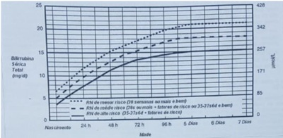

O acometimento primário do sistema nervoso central por linfoma é, mais provavelmente, do tipo:
Uma das causas mais frequentes de hospitalização de crianças de até dois anos por doença pulmonar é:
Paciente do sexo feminino, de seis anos, apresenta artrite há três meses de punho esquerdo e nos joelhos (com contratura em exão e diminuição do espaço articular à radiologia), sem outras manifestações clínicas. O resultado do FAN é 1:320, com padrão nuclear pontilhado. Qual é a melhor interpretação deste achado laboratorial?
No Brasil, até o nal de agosto de 2019, foram confirmados um total de 1.680 casos de sarampo em onze estados. O diagnóstico precoce e a instituição das medidas de prevenção e controle são fundamentais no manejo dos casos. Desta forma, em relação ao sarampo,
Um médico é chamado para avaliar um menino de dez meses trazido por causa de redução do movimento do braço esquerdo. Sua mãe está muito ansiosa e relata que ele caiu da cama em que ela estava, depois de uma soneca naquela manhã. Exceto por hematomas e dor à movimentação do braço esquerdo, os achados no exame físico são normais. A radiogra a de ossos longos revela uma fratura aguda do úmero direito e duas fraturas em cicatrização das costelas esquerdas. Sua mãe a rma não ter conhecimento quanto às fraturas das costelas e nega trauma anterior. Das características abaixo, quais são consideradas alarmantes para que se suspeite de violência contra a criança?
Um médico é chamado para avaliar um menino de dez meses trazido por causa de redução do movimento do braço esquerdo. Sua mãe está muito ansiosa e relata que ele caiu da cama em que ela estava, depois de uma soneca naquela manhã. Exceto por hematomas e dor à movimentação do braço esquerdo, os achados no exame físico são normais. A radiogra a de ossos longos revela uma fratura aguda do úmero direito e duas fraturas em cicatrização das costelas esquerdas. Sua mãe a rma não ter conhecimento quanto às fraturas das costelas e nega trauma anterior. A situação descrita indica um forte indício de violência doméstica (ou intrafamiliar), devendo ser considerado que:
M.C., do sexo feminino. de cinco anos, apresenta quadro edema insidioso há dois duas semanas que, há dois dias, evoluiu para anasarca. Além disse, a mãe refere que a urina apresenta-se na cor de coca-cola, com espuma, e informa que o volume urinário é normal. Ao exame sico, apresenta-se anasarcada com pressão arterial abaixo do percentil 90. Abdome com presença de ascite. Aparelho respiratório sem alterações. Frequência respiratória:16 IPM, sem tiragem. Peso seco:22 kg; peso atual: 26kg. Trouxe alguns exames que mostram: hipercolesterolemia,hipertrigliceridemia,hipoalbuminemia C3 e C4 normais. Ureia e creatinina adequadas para idade. EAS com proteinúria de 3+, hemoglobia positivo 4+ leucócitos:5.000/ml e hemácias> 1.000.000/ml. Proteinúria de 24 horas:1300 mg/24 horas; volume :950 ml. Nesse caso, qual é a conduta médica?
Paciente de um ano e seis meses, do sexo masculino, vem ao consultório para consulta de rotina. Trouxe um exame de urina e urocultura para o médico avaliar. À anamnese, não apresenta queixa. Mãe nega febre, nega irritabilidade. O lactente apresenta apetite preservado, alimentando-se bem. Está com adequado ganho pôndero- estatural. Peso e estatura entre z score 0 e 1, ascendente. Nega alterações urinárias, refere urina clara, com volume adequado. Não apresenta controle es ncteriano. A o exame físico, nada digno de nota e apresenta pressão arterial abaixo do P90. O exame de urina foi coletado com saco coletor com assepsia realizada de forma adequada. EAS - densidade: 1.010, PH:6.0; nitrito:negativo; proteínas: ausente; hemoglobina: ausente; leucócitos: 60.000/ml e hemácias: 2.000/ml. UROCULTURA - Escherichia coli: 5.000 UFC/ml. Nesse caso, qual será a conduta adequada?
Paciente de um ano e seis meses, do sexo masculino, vem ao consultório para consulta de rotina. Trouxe um exame de urina e urocultura para o médico avaliar. À anamnese, não apresenta queixa. Mãe nega febre, nega irritabilidade. O lactente apresenta apetite preservado, alimentando-se bem. Está com adequado ganho pôndero- estatural. Peso e estatura entre z score 0 e 1, ascendente. Nega alterações urinárias, refere urina clara, com volume adequado. Não apresenta controle es ncteriano. A o exame físico, nada digno de nota e apresenta pressão arterial abaixo do P90. O exame de urina foi coletado com saco coletor com assepsia realizada de forma adequada. EAS - densidade: 1.010, PH:6.0; nitrito:negativo; proteínas: ausente; hemoglobina: ausente; leucócitos: 60.000/ml e hemácias: 2.000/ml. UROCULTURA - Escherichia coli: 5.000 UFC/ml. Nesse caso, qual é o diagnóstico?
Um recém-nascido grande para a idade gestacional, lho de mãe diabética insulinodependente. Na checagem da glicemia da primeira hora de vida, constata-se um valor de 25 mg/dL com a criança assintomática. Após a primeira tomada de conduta, a glicemia foi reavaliada e foi constatado o valor de 30mg/dL, e, neste momento, o recém- nascido evoluiu com crises convulsivas. A melhor conduta a ser tomada é:
Um recém-nascido grande para a idade gestacional, lho de mãe diabética insulinodependente. Na checagem da glicemia da primeira hora de vida, constata-se um valor de 25 mg/dL com a criança assintomática. A melhor conduta a ser tomada é:
Um recém-nascido a termo (38 semanas e três dias), com 72 horas de vida, apresenta icterícia neonatal às custas de bilirrubina indireta (BT = 16mg/dL e BI = 14,6 mg/dL). A tipagem sanguínea materna é O positivo e a paterna é A positivo. A gestação foi sem intercorrências. A apojadura ocorreu hoje, mas a diurese está diminuída, embora o neonato esteja sugando bem. Considerando a icterícia apresentada e de acordo com a tabela de fototerapia da Academia Americana de Pediatria, o bebê deverá:

Uma criança com tetralogia de Fallot apresenta as seguintes alterações cardíacas:
Diante de um lactente de nove meses com quadro de cólica intermitente, vômitos, evacuações com sangue e massa abdominal palpável deve ser indicada a realização imediata de:
Uma criança de dois anos, portadora de doença falciforme, é atendida na unidade de pronto atendimento com quadro de febre iniciada há 36 horas, sem outros sintomas associados. O exame físico não apresenta alterações além da temperatura de 38,9 ºC. A conduta será:
Uma menina (quatro anos, peso = 16 kg) chega ao pronto-socorro com relato de vômitos (três episódios) e fezes aquosas (quatro episódios) atribuídos à intoxicação alimentar. A família relata quadro semelhante em várias pessoas após almoço em um evento na igreja. Ao exame físico, observam-se sinais de desidratação moderada, sem outras alterações. A conduta imediata será:
Um médico está de plantão no pronto-socorro e atende uma criança de dois anos, com relato de aumento de volume e dor em região cervical há três dias. Ao exame: REG, eupneica, corada, febril, hidratada, apática. Há extensa hiperemia em região cervical (anterior e lateral à esquerda), com edema acentuado e calor. Os demais dados do exame físico não estão alterados. Diante do diagnóstico clínico de celulite em região cervical,
Sobre o crescimento na adolescência e puberdade:
Com referência a transtornos alimentares na adolescência,
Sobre a consulta do adolescente:
Uma criança de dois anos possui uma massa no testículo esquerdo com 2,5 cm de diâmetro e bem circunscrita. Histologicamente, essa massa demonstra lâminas de células e glândulas mal definidas, compostas de células cuboides, algumas com glóbulos hialinos eosino licos, formando pseudorrosetas. A análise encontra microcistos e estruturas glomeruloides primitivas. É demonstrada AFP no citoplasma das células neoplásticas por imuno-histoquímica. Nesse caso, a criança provavelmente tem:
Qual dos achados microscópicos a seguir, ao exame de urina, é mais indicativo de glomerulonefrite?
Primigesta de 34 anos, idade gestacional de 30 semanas, apresentando duas medidas de pressão arterial acima de 140 x 90 mmHg e proteinúria acima de 300 mg em 24 horas. Nesse caso, o diagnóstico mais provável é:
Paciente com gestação de 39 semanas e em trabalho de parto. Durante o toque, o examinador constata que o polo cefálico está no plano 0 de De Lee. Isto significa que o polo cefálico encontra-se ao nível de:
Ao realizar o primeiro tempo (primeira manobra) das manobras de Leopold, o examinador identi cou o polo cefálico. Isto é indicativo de que se trata de feto em:
Paciente com hipertensão arterial crônica e gestação de 39 semanas de idade gestacional estimada pela data da última menstruação e confirmada por ultrassonogra a de segundo trimestre, que descreve feto único e placenta de inserção fúndica. Comparece ao pronto-socorro obstétrico, queixando-se de sangramento vaginal e dor intensa em baixo-ventre, de início súbito. Ao exame, apresenta frequência cardíaca de 110 batimentos por minuto e pressão arterial 10x50mmHg. Útero se encontra com tônus aumentado e os batimentos cardíacos fetais estão em 80 batimentos por minuto. Nesse caso, o diagnóstico mais provável é:
Paciente com 10 semanas de idade gestacional se queixando de náuseas, vômitos, cólicas e sangramento vaginal. Ao exame físico, apresenta pressão arterial de 160 x 100mmHg, sangramento com aspecto de ""suco de ameixa"" e, ao toque, o útero se encontra palpável entre a sínfise púbica e a cicatriz umbilical. Nesse caso, o diagnóstico mais provável é:
No perfil hemodinâmico fetal, a circulação placentária é avaliada pelo doppler de:
Paciente comparece ao pronto atendimento obstétrico em trabalho de parto. A idade gestacional estimada pela data da última menstruação é de 34 semanas. Já pela ultrassonogra a realizada no primeiro trimestre, a estimativa é de 38 semanas de idade gestacional. Nesse caso, a conduta adequada será:
Paciente gestante com útero palpável ao nível da cicatriz umbilical. A idade gestacional mais provável é:
Paciente comparece à consulta referindo atraso menstrual e quer saber se está grávida. São sinais que poderão indicar esta condição:
O carcinoma de mama é a segunda neoplasia maligna mais frequente na mulher, superando apenas pelo câncer de pele não melanoma. No Brasil, aproximadamente 60 mil mulheres são acometidas por câncer de mama anualmente, com taxa de mortalidade ao redor de 20%. Para que ocorra o carcinoma de mama, é necessário que haja erro genético, que pode ser herdado, através de mutações germinativas, ou adquirido ao longo da vida, em decorrência de mutações somáticas. Vários são os fatores de risco para o carcinoma que pode ser graduado em lesões graus I, II ou III, de acordo com a formação tubular, características nucleares e índice mitótico, denominado sistema de Bloom e Richardson. A classificação molecular in uencia diretamente no tratamento e na avaliação prognóstica. Através da imuno-histoquímica pode-se avaliar a expressão dos receptores de estrogênio, progesterona, HER-2 (receptor tipo 2 do fator de crescimento epidermal humano) e Ki-67. Nesse sentido.
São várias as desordens benignas das mamas. Os nódulos mamários compreendem os broadenomas, cistos, lipomas, hamartomas, adenomas, papilomas e tumor loides. Diversas doenças não infecciosas podem ser acompanhadas de processo inflamatório nas mamas, causando mastalgia, destacando-se a doença de Mondor, mastite diabética, sarcoidose, mastite actínica, mastite por lúpus eritematoso disseminado e mastite oleogranulomatosa. Tendo em vista essas desordens benignas,
As vulvovaginites de maior prevalência são a vaginose bacteriana, a candidíase e a tricomoníase. São causas de leucorreia ou corrimento vaginal, prurido de intensidade variável, edema, disúria, hiperemia, dispareunia e odor. O perfeito entendimento das suas diferenças e particularidades clínicas são importantes na escolha do tratamento. Assim, para a definição de tratamento, deve-se considerar que:
O diagnóstico da incontinência urinária é clínico, com ênfase no diário miccional e no exame físico. Os fatores mais importantes na anamnese são a duração do sintoma, que tipo de esforço provoca a perda, se a perda ocorre com pouco volume na bexiga, se usa absorvente, antecedentes de cirurgia ginecológica ou obstétrica, to sse crônica, obesidade, noctúria, urgência miccional e enurese noturna. Com base no exposto,
O conhecimento da embriologia sobre a formação gonadal e desenvolvimento do seio urogenital, e sua siologia, é fundamental para a compreensão das alterações genitais, desordens sexuais e do crescimento. Este conhecimento básico é o alicerce para o entendimento das teorias da endometriose e dos transtornos do climatério. Com base nesse conhecimento,
A adenomiose foi referida no passado como cystosarcoma adenoids uterinum. Na maioria das mulheres, os primeiros sintomas podem surgir na adolescência e permanecer na menacme. Em geral, o diagnóstico é feito por achados de histopatologia de peças cirúrgicas. A adenomiose caracteriza-se por
O mioma é um tumor da camada muscular do útero, que pode se localizar em várias regiões uterinas, ocasionando dor, sangramento, anemia e com baixo potencial de transformação sarcomatosa. O conhecimento de sua siopatologia é essencial para o tratamento correto. Dessa forma,
Algumas desordens ginecológicas, como a síndrome pré-menstrual, o mioma uterino e o sangramento uterino anormal, afetam milhares de mulheres, ocasionando transtornos emocionais, sintomatologia dolorosa e anemia. Entre essas desordens,
A dismenorreia é uma desordem que afeta a mulher na menacme, interferindo na qualidade de vida e nas atividades habituais. A dismenorreia, então.
A infecção pelo vírus da hepatite C (VHC) atinge milhões de pessoas em todo o mundo e é uma das principais causas de morbimortalidade relacionadas ao fígado. Na contaminação pelo VHC.
M.C.A., de dez anos, do sexo masculino, com quadro, há aproximadamente três dias, de erupção cutâneo-mucosa múltipla, bolhosa, erosiva e crostosa, acometendo 10% da superfície corporal, antecedida de febre, cefaleia, coriza, artralgias e mialgias. Precedendo este quadro, relatou episódio de amigdalite, com uso de amoxacilina e nimesulida, há cerca de trinta dias. Diante dos sintomas, essa condição clínica é indicativa de:
M.G.S.S., de 25 anos, solteira, cabeleireira, nega uso de medicamentos de forma contínua. Queixa-se de início de febre há três dias. Fez uso de dipirona. Há dois dias, surgiram nódulos eritematosos dolorosos em membros superiores e membros inferiores. Procurou atendimento médico e, ao exame dermatológico, apresentava, além dos nódulos, máculas eritematosas mal definidas, algumas de centro poupado, disseminadas. A paciente informava ter esses sintomas há alguns meses e que usou apenas medicamentos tópicos para micose, por conta própria. No momento da consulta, foi feito o teste de sensibilidade térmica, tátil e dolorosa, que estavam todos alterados. Diante do quadro, o tratamento a ser realizado será:
A doença ocupacional em decorrência do uso do mercúrio metálico é denominada:
De acordo com o Guia de Vigilância em Saúde (2019), paciente com quadro febril (acima de 38ºC), mialgia, cefaleia, sinais e sintomas de insu ciência respiratória aguda, de etiologia não determinada, na primeira semana da doença, ou paciente com enfermidade aguda, apresentando quadro de insu ciência respiratória aguda, com evolução para óbito na primeira semana da doença. Esses são critérios estabelecidos para a definição de caso suspeito de
A frequência esperada de alunos reprovados em imunologia é estimada em 90%. Se dois alunos se matriculam na disciplina de imunologia, qual é a probabilidade de ambos serem aprovados na disciplina?
Quanto maior a sensibilidade de um teste diagnóstico, maior será
Um investigador interessado em estudar o álcool como fator de risco para cirrose hepática realizou um estudo epidemiológico. Foram selecionados para o estudo 14 casos e 28 controles. Dentre os casos, seis tinham história prévia de uso de bebida alcoólica e, dentre os controles, cinco tinham história prévia de uso de bebida alcoólica. O Odds Ratio (OR) foi igual a 3,45 com intervalo de con ança de 95%, variando de 0,67 a 18,59. Teste x² = 3,02 (p=0,082). A interpretação desses resultados indica que:
É um indicador que expressa o efeito das mortes ocorridas precocemente em relação à duração de vida esperada, para uma determinada população. Trata-se
É um exemplo de doença/agravo de notificação compulsória semanal, segundo o Ministério da Saúde brasileiro:
Um médico avalia uma pesquisa sobre um tratamento medicamentoso de uma doença frequente no seu território de atuação. Os resultados encontrados foram: - Pacientes tratados com o medicamento e tiveram cura da doença: 75%; - Pacientes tratados com um placebo e tiveram cura da doença: 30%; Então, a redução relativa do risco foi de:
A Lei n. 8.080, de 19 de setembro de 1990, dispõe sobre as condições para a promoção, proteção e recuperação da saúde, a organização e o funcionamento dos serviços correspondentes e dá outras providências. No Título II (Do Sistema Único de Saúde), Capítulo IV (Da Competência e das Atribuições), Seção II (Da Competência), a Lei n. 8.080 define as competências de cada instância de gestão (federal, estadual, distrital e municipal). De acordo com essa lei, é uma competência do Estado:
A Política Nacional de Atenção Básica (PNAB) estabelece atribuições comuns e atribuições especí cas aos membros das Equipes de Atenção Básica. É uma atribuição específica do profissional médico:
Revisar: possível letra faltando em enunciado
A Portaria n. 2.436, de 21 de setembro de 2017, aprova a Política Nacional de Atenção Básica (PNAB), estabelecendo a revisão de diretrizes para a organização da Atenção Básica, no âmbito do Sistema Único de Saúde (SUS). Os princípios e diretrizes, a caracterização e a relação de serviços ofertados na Atenção Básica serão orientadores para a sua organização nos municípios. Conforme a PNAB, constitui princípio ou diretriz da Atenção Básica:
O sr. J.A., de 64 anos, trabalha em um laticínio, em Belo Horizonte - MG, e possui plano de saúde pela empresa em que trabalha. Recentemente, ele foi diagnosticado com lúpus eritematoso sistêmico e obteve o medicamento micofenolato de mofetila pelo SUS, visto que seu plano de saúde não cobre tal medicamento. O princípio do Sistema Único de Saúde que respalda o acesso desse paciente aos serviços públicos de saúde, mesmo ele tendo plano de saúde, é:
O SUS conta com instâncias colegiadas previstas na Lei n. 8.142, de 28 de dezembro de 1990, que assim dispõe:
A saúde está inscrita na Constituição Federal do Brasil de 1988 como um direito, conforme os art. de 196 a 200. Considerando o Sistema Único de Saúde no Brasil (SUS),
O Sistema Único de Saúde (SUS), de que trata a Lei n. 8.080, de 19 de setembro de 1990, contará com instâncias de gestão em cada esfera de governo, sendo elas:
A lei n. 8142, de 28 de dezembro de 1990, dispõe sobre a participação da comunidade, na gestão do Sistema Único de Saúde (SUS) e sobre as transferências intergovernamentais de recursos nanceiros na área da saúde e dá outras providências. Nessa lei, o art. 3º prevê que os recursos referidos no inciso IV do art. 2º serão repassados de forma regular e automática para os municípios, estados e Distrito Federal, de acordo com os critérios previstos no art. 35 da Lei n. 8.080, de 19 de setembro de 1990. Para receberem os recursos, de que trata o art. 3º da referida Lei 8142/2019, os municípios, os estados e o Distrito Federal deverão contar com:
Paciente de 46 anos, do sexo masculino, é trazido por familiares para atendimento por estar "retraído e isolado". Há um mês não sai do quarto e nem toma banho. O paciente apresenta-se apático, retraído socialmente e está há anos sem trabalhar. Não se engaja em atividades prazerosas e nem em projetos de longo prazo. Fala poucas frases esparsas e desconectadas e neologismos frequentes. Diz não entender o motivo de ter sido levado ao médico, ainda que passe dias sem tomar banho e escovar os dentes. Não se sente triste. Os sintomas vêm se agravando há cerca de 20 anos e se iniciaram após um quadro psicótico que necessitou de internação por dois meses. Nesse caso, qual seria o tratamento ideal para esse paciente?
Paciente de 23 anos, do sexo feminino, sofre desde muito cedo de ataques de pânico precipitados pela necessidade de fazer exames de sangue, ver agulhas, tomar injeções e quando vê sangue. Ela chega a car dias sem dormir na expectativa de ter que vir a se deparar com esse tipo de situação e chega a desmaiar em algumas ocasiões, nas quais é exposta a isso. Relata que os mesmos sintomas também acontecem na presença de alguns animais, tais como lagartas. Nesse caso, qual é, respectivamente, o diagnóstico e tratamento ideal para tal condição?
Homem de 72 anos queixa-se de dor de forte intensidade (9/10) e edema do joelho esquerdo, de início há um dia. A radiogra a simples mostra calci cação linear do menisco medial. A análise do líquido sinovial mostra, à microscopia de luz polarizada, a presença de cristais romboides com birrefringência positiva fraca. A principal hipótese diagnóstica para este paciente é:
Nos processos articulares inflamatórios, as possibilidades diagnósticas são definidas de acordo com o número de articulações envolvidas. Em um paciente com monoartrite aguda, a artrocentese contribui para auxílio na investigação diagnóstica e, na suspeita de uma causa inflamatória, o líquido sinovial apresenta como características:
Paciente do sexo feminino, de 32 anos, com diagnóstico de asma desde a infância. Faz uso de medicação inalatória de forma contínua e regular. Há cerca de quatro semanas, apresentou piora dos sintomas, com dispneia, chiado no peito e tosse seca cerca de duas vezes por semana, necessitando de uso de medicações de resgate inalatório também duas vezes por semana. Alega ter acordado à noite apenas uma vez nesse período por dispneia. E mantém sem alterações suas atividades diárias em casa e no trabalho. Conforme avaliação do controle da GINA 2019, como avaliar essa paciente?
Paciente do sexo masculino, de 48 anos, sem história de patologias prévias. Iniciou sintomas há cerca de sete dias de febre alta, tosse produtiva com escarro amarelado, falta de ar e dor torácica ventilatório dependente em região de hemitórax esquerdo. Procurou atendimento médico e foi diagnosticado com pneumonia. Ao exame físico, apresentava frequência cardíaca: 78 BPM, frequência respiratória: 18 IRM, pressão arterial: 120x80 mmHg, saturação periférica de oxigênio 98% em ar ambiente, em bom estado geral, eupneico, hidratado, consciente, orientado, ausculta pulmonar com estertores nos na base hemitórax esquerdo. Exames laboratoriais sem alterações. Sem história de alergia a medicamentos ou uso de antibióticos recentes. Qual é a conduta adequada para esse paciente?
Paciente de 27 anos, etilista pesado há cinco anos, foi levado por transeuntes ao pronto atendimento com perda de consciência e relato de convulsões. O plantonista avalia que a via aérea está pérvia, o paciente respira de forma ruidosa, com pulsos cheios e enchimento capilar menor que dois segundos, saturando 92% de oxigênio ao ar ambiente. A escala de coma de Glasgow é 9. Nesse caso, a conduta mais indicada é:
Alguns sinais e sintomas são considerados alerta para cefaleias secundárias e indicam a necessidade de investigação por exames (red flags) como, por exemplo, episódios recorrentes de:
Paciente de 70 anos, do sexo masculino, é levado ao pronto-socorro com perda da movimentação e fala. Era hipertenso em uso regular de Losartana 50 mg, duas vezes ao dia. Ao exame, apresentava BNF 2T, sem sopros, MVF sem RA, abdome normal, sonolência, PA: 190 x 105 mmHg, FC: 95 BPM, FR: 17 IRPM, saturação de O₂ 96%, glicemia capilar de 112 mg/dl. Escala de coma de Glasgow: 10. Hemiplegia direita completa e afasia motora, força preservada a esquerda, sem sinais de perda sensitiva. Aumento dos reflexos profundos à direita e Babinski. Pupilas iso e fotorreativas, nuca livre, demais pares cranianos normais. Considerando a principal hipótese diagnóstica para o caso, a conduta recomendada quanto à pressão arterial é:
Mulher de 50 anos come um salgado que estava na prateleira do comércio há três dias, na temperatura ambiente. Horas depois, apresenta náuseas e vômitos, logo em seguida diarreia profusa. Ela tenta tomar soro oral, mas não melhora. No dia seguinte, procura o pronto-socorro e recebe hidratação venosa. Melhora um pouco e volta para casa. À noite, com febre alta, persistindo a diarreia, procura um hospital onde acaba sendo internada na UTI. Então, estava com pressão arterial = 80/42 mmHg, temperatura de 39 ºC, SAT O₂ 88% no ar ambiente. Submetida à hidratação rápida, ventilação não invasiva, foram colhidos exames que mostraram Hb = 16 g/dL, leucócitos 42.000/mm³, bastões 18%, plaquetas 35.000, lactato 25 mg/dL. Como a PA não melhorou, iniciou-se noradrenalina. A creatinina, que dias antes era de 0,6 mg/dL, agora estava em 3,5 mg/dL e a ureia, respectivamente, 21 mg/dL e 138 mg/dL. Nesse caso, qual é a causa do aumento da creatinina?
J.L.V., de 65 anos, homem, pardo. Tem antecedentes de diabetes tipo 2 há vinte anos, hipertensão arterial há quinze anos e gota há cinco anos. Faz uso regular de anlodipino e metformina, relatando uso ocasional de anti-inflamatórios não hormonais (na vigência de artrite gotosa). Passou em consulta médica de check up com um clínico, que pediu alguns exames: creatinina sérica: 1,6 mg/dL (TFG estimada (CKD-EPI): 46 ml/min), exame de urina: densidade 1020, pH 5,5, sem elementos anormais, 1 leucócito/campo, sem hemácias, relação albumina/creatinina na urina: 100 mg/g, glicemia de jejum: 130 mg/dL. A respeito da alteração de função renal observada, este paciente
Paciente de 40 anos, com leucemia mieloide crônica, sem outras comorbidades, com ausência de resposta molecular maior aos 24 meses, sendo considerada falha ao tratamento com Imatinibe. Trocado seu tratamento para Nilotinibe, 400 mg, duas vezes ao dia, e, após oito meses, apresenta resposta citogenética completa e resposta molecular completa. Em avaliação periódica após três anos de tratamento com Nilotinibe, relata dor e frialdade em pé direito. Após avaliação clínica e de imagem, detectada doença vascular oclusiva. Nesse caso, qual é a conduta?
Paciente de 65 anos, previamente hígido, refere cefaleias leves há seis meses, que vêm se intensi cando. Em avaliação com clínico geral, notado baço percutível, mas não palpável. Hemograma mostra hemoglobina de 16.8 g/dL, Ht: 50%, GB: 12.900/uL, com bastões: 06%, segmentados: 68%, eosinó los: 03%, basó los: 00%, linfócitos: 20%, monócitos: 03%, plasmócitos: 01%, plaquetas: 500.000/uL. Apresenta DHL: 250 (nl pelo método: 150 - 270), eritropoetina: 1,2 UI/L. Biópsia de medula óssea mostra hipercelularidade evidente, com megacariócitos formando agregados, com variação de tamanho, e bras reticulínicas esparsas. Pesquisada mutação JAK2 exon14: negativa, CALR: negativa, MPL: negativa. Pesquisa de mutação JAK2 exon12: positiva. Segundo os critérios diagnósticos das neoplasias hematológicas da Organização Mundial da Saúde, de 2016, o diagnóstico é:
Paciente do sexo masculino, de 50 anos, obeso, procedente de Barreiras-BA, apresentando disfagia intermitente com alimentos sólidos há seis meses. Relatava ainda pirose retroesternal frequente há seis anos. Neste caso, o diagnóstico mais provável é:
Hemorragia Digestiva Alta Varicosa HDA Varicosa Paciente do sexo masculino, de 22 anos, após vários episódios repetidos de vômitos, nas últimas seis horas, inicialmente com conteúdo claro, com sabor ácido, apresentou episódio de hematêmese. Neste caso, o diagnóstico mais provável é:
Homem de 45 anos relata perda de aproximadamente cinco kg (5% do peso) em um mês, após quadro com febre e odinofagia de remissão espontânea. Nega alterações oculares. Sente dor cervical à palpação e à deglutição, insônia, palpitações e aumento do número de evacuações diárias. Refere estar em uso de suplementos ""termogênicos"" para melhorar sua disposição para atividades físicas, há seis meses. Traz em mãos os seguintes exames: TSH = 0,01 uIU/mL (VR 0,5 - 4,5 uIU/mL), T4 livre = 2,77 ng/dL (VR 0,7- 1,5), tireoglobulina 250 ng/mL (VR: 1,5-50), antitireoperoxidase e TRAb negativos. Nesse caso, o exame que melhor elucidaria o quadro atual e o provável diagnóstico desse paciente são:
A semaglutida é um antidiabético recentemente liberado pela Anvisa para uso subcutâneo no tratamento do diabetes mellitus. De acordo com os estudos Sustain, esse antidiabético
Um paciente portador de ICFEr, FE = 35% e NYHA II vai ao ambulatório para consulta de rotina. Ao exame, observam-se ritmo regular, FC = 70 bpm, PA 120x80 mmHg e um per l quente e seco. Faz uso regular de Bisoprolol 10 mg/dia, Enalapril 20 mg/dia e Espironolactona 25 mg/dia. Nesse caso, a conduta mais apropriada é:
Qual é a melhor maneira de prevenir AVC isquêmico em um homem de 60 anos, obeso, sedentário, sem outras comorbidades e com fibrilação atrial paroxística?
Qual é a meta terapêutica de LDL colesterol para pacientes de baixo risco cardiovascular?
Vários estudos demonstraram que a taxa de nefrectomia em pacientes com lesões renais traumáticas foi maior com a exploração cirúrgica do que com o manejo não operatório. Entretanto, a intervenção cirúrgica se torna obrigatória se houver
As lesões vesicais traumáticas extraperitoneais são duas vezes mais comuns que as lesões intraperitoneais e estão quase invariavelmente associadas a uma fratura pélvica. Classicamente, as rupturas extraperitoneais da bexiga terão uma aparência de explosão estelar nos estudos radiográ cos. Na presença de uma lesão da bexiga extraperitoneal, considera-se uma intervenção cirúrgica aberta se houver
Revisar: possível letra faltando em enunciado
O maior risco de câncer colorretal nos portadores de retocolite ulcerativa está associado a fatores como o início da doença em idade muito jovem e a paciente
A instabilidade de microssatélites (MSI)
Paciente do sexo masculino, de 64 anos, tabagista (30 anos-maço), durante exames de rotina teve diagnóstico de adenocarcinoma de pulmão. Realizou PET SCAN para estadiamento clínico-oncológico que evidenciou tumor de cerca de 3,0 cm, em lobo pulmonar superior direito, com SUV 5,4 (atividade metabólica aumentada), sem a presença de linfadenomegalia significativa. Sem captação em sítios a distância. O paciente relata que lhe foi dito que seu tumor é estádio IA3 (T1cNoM0). Neste caso, a conduta indicada, após avaliação clínica de operabilidade, é:
Paciente do sexo masculino, de 38 anos, com quadro de tosse há quinze dias, dor em hemitórax direito há dez dias e febre esporádica há sete dias, evoluindo com astenia e inapetência. Realizou raio X de tórax que apresentou opacidade homogênea em terço inferior do hemitórax direito, sugestivo de derrame pleural. Foi realizada uma toracocentese. Os seguintes parâmetros foram encontrados à análise do líquido: ""Líquido pleural de aspecto turvo. PH = 6,8. DHL: 2000 UI/l (líquido). DHL = 420 UI/l (sangue). Proteínas: 4,9 mg/dl (líquido). Proteínas séricas: 3,8 mg/dl (sangue). Glicose: 38 mg/dl (líquido). Leucometria no líquido: 40.000, leucócitos com 87% de neutró los."" USG de tórax: derrame pleural em HTD, sem aparente loculação. Nesse caso, o paciente é portador de:
Um paciente classificado como susceptível ao desenvolvimento de hipertemia maligna será submetido à adenoamigdalectomia. Em relação ao planejamento da anestesia para o procedimento:
Paciente de 45 anos, do sexo feminino, pesando 75 kg e com 1,55 m de altura será submetida à colecistectomia videolaparoscópica. Na avaliação pré-anestésica, o exame físico da via aérea foi descrito da seguinte forma: presença de dentes bem conservados com incisivos superiores relativamente longos, sendo a distância interincisivos 2,5 cm, pescoço alongado com boa mobilidade cervical, distância tireomentoniana maior que 6 cm, reduzida complacência do espaço submandibular. Palato arqueado e ao teste de Mallampati foram visualizados o palato mole e a base da úvula. No caso da paciente, a classificação de Mallampati e o risco de dificuldade para a intubação são assim especificados:
Paciente de 57 anos, vítima de queimadura em fossa poplítea esquerda desde a adolescência, apresentou-se no serviço de cirurgia plástica para avaliar a lesão. Ao exame físico, apresenta-se com lesão vegetante em fossa poplítea, sangrante, com 15 anos de evolução e biópsia da lesão de carcinoma espinocelular. Nesse caso, o diagnóstico mais provável da lesão descrita é:
No exame físico do serviço de emergência, o trauma facial é uma possibilidade frequente. Do ponto de vista da traumatologia facial,
A sinovite transitória de quadril caracteriza-se por quadro agudo de dor, afetando, aos poucos, um lado dos quadris da criança sadia. O tratamento dessa afecção é:
Displasia do desenvolvimento do quadril é uma expressão genérica que descreve um espectro de anormalidades anatômicas do quadril, que podem ser congênitas ou de desenvolvimento após o nascimento. Ao exame físico, nota-se o encurtamento femoral do lado acometido
O principal fator adverso na cicatrização de uma ferida operatória é:
Um paciente elegível para by-pass gástrico e Y-Roux para tratamento da obesidade mórbida não deve ser operado, se nos últimos dois meses tiver apresentado a seguinte complicação:
O diagnóstico da apendicite aguda na mulher grávida pode ser di cultado pelo seguinte fator de confusão encontrado durante a gestação:
A videolaparoscopia para estadiamento está indicada nos pacientes candidatos a tratamento operatório de um câncer de:
Paciente do sexo feminino, de 64 anos e ECOG = 1, recebe diagnóstico de neoplasia da cabeça pancreática. A lesão tem aproximadamente 4 cm, faz contato com a con uência espleno-mesentérica em 180º e discreto com o tronco celíaco. Após drenagem biliar, a paciente foi submetida à quimioterapia com vistas à tentativa futura de tratamento operatório. Neste contexto, o principal resultado esperado da estratégia neoadjuvante de quimioterapia é:
Paciente do sexo masculino, portador de metástases hepáticas de origem colorretal metacrônicas, apresenta cinco lesões hepáticas assim localizadas: duas no setor medial esquerdo, uma no setor lateral esquerdo e duas no segmento 6. O CEA no momento do diagnóstico era 400 ng/ml. Após dois ciclos de quimioterapia com Folfoxiri e Bevacizumab, observou-se resposta total no setor lateral esquerdo e resposta parcial no restante das lesões hepáticas. O CEA sérico foi reduzido para 35 ng/ml. Diante do exposto, qual é o tratamento?
Um paciente internado por infarto agudo do miocárdio, apresentando dor súbita, palidez e parestesia em membro inferior direito, tem como provável diagnóstico:
Dentre os fatores não relacionados com o aumento do risco de rotura de um aneurisma de aorta abdominal, está Respostas: 1 12 23 34 45 56 67 78 89